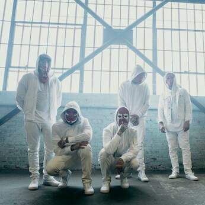

Ko su Hollywood Undead?
Hollywood Undead su osnovali J-Dog i Deuce (bivši član) juna/jula 2005. godine. Svi članovi su odrasli u LA, Kalifornija. Danas bend ima pet članova; J-Dog (vokal, gitara, bas gitara, klavijature, sintisajzer), Charlie Scene (vokal, solo gitara), Johnny 3 Tears (vokal, bas gitara), Funny Man (vokal) i Danny (vokal, klavijature, gitara). Tu su i tri prethodna člana; Da Kurlzz (vokal, bubnjevi, perkusije, otišao u junu 2017) Deuce (vokal, otišao 2009 iz nepotvrđenog razloga) i Shady Jeff (vokal, otišao 2007 zbog neslaganja sa ostalim članovima). Svi članovi nose maske i koriste nadimke. Poznati su po svojim sarkastičnim i preciznim tekstovima. Neke od njihovih pesama govore o žurkama, piću, , devojkama, ali i o ljubavi, osećanjima, bezdušnosti, slomljenom srcu i sličnim stvarima.
Naziv „Hollywood Undead” je uveo J-Dog kada su on i Deuce napisali pesmu pod nazivom „Hollywood” i tada su bend nazivali „Undead” (ova oznaka potiče iz vremena kada su nazivali ljude koji su živeli u Holivudu „nemrtvi“ jer su se stalno zabavljali i zato su mislili da izgledaju kao zombiji). J-Dog je napisao naziv benda i naziv pesme na malom CD-u i pokazao ga komšiji. Komšija to nije dobro pročitao i pomislio je da su obe te reči naziv benda. J-Dog-u se dopao način na koji zvuči, a ime se zadržalo.
Možete više informacija naći na njihovom zvaničnom sajtu.
Njihov zvanični youtube kanal možete naći ovde.